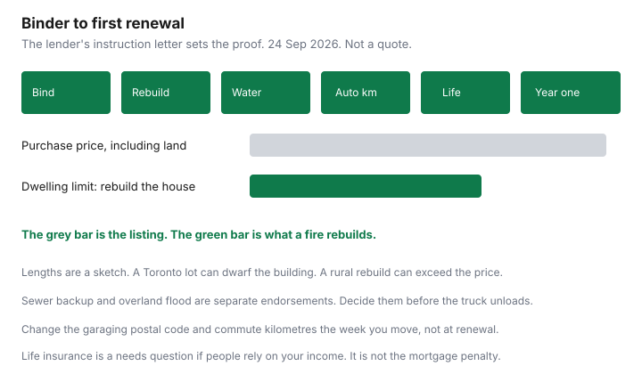

Insurance · Canada
Insurance Checklist for a New Home Purchase in Canada: Binder to Closing Without Gaps
The week a purchase firms up, insurance is a closing document, not a chore for after the truck. Lenders want proof the dwelling is insured before they advance. Buyers who start that quote on the Friday before Monday’s closing accept whatever limit the first carrier types in, often the purchase price, and discover the sewer endorsement was declined after the first storm. This page is the insurance sequence only. Purchase math, land-transfer tax, and the mortgage itself stay under Housing. Water wording and replacement cost already have their own guides. Use those for the definitions. Use this list for the order.
Disclosure: Home insurance quote flows, broker quote portals, and term life quote portals are offer types. Saving Optimizer may earn a commission if partner links are added later. We do not claim a partnership with any insurer, lender, or brokerage. Education only. Not a mortgage opinion and not a coverage binder. Your solicitor’s letter controls what proof the lender will accept.
Key takeaways
- Bind the home policy before closing, with the lender named, effective on or before the advance. A high-ratio or CMHC-insured mortgage still asks for that proof.
- The dwelling limit is rebuild cost, not the purchase price. Land is not what a fire replaces.
- Choose sewer backup and overland flood, or write down that they were unavailable, before furniture is in the basement. They are not the same as a burst pipe.
- Update the auto garaging address and commute kilometres the week you move.
- If people rely on your income and the mortgage is new and large, rerun the life needs worksheet. Creditor mortgage life is not the same product as personal term.
Bind home insurance before closing—lenders require proof
Ask the solicitor, the week the offer is firm, what the lender’s instructions require. The usual list is a binder or certificate that shows the insured names, the civic address, the effective date on or before closing, the dwelling limit, the deductibles, and the lender as mortgagee or loss payee. Standard Canadian home policies include a mortgage clause so the lender’s interest is protected to the extent of the mortgage. The solicitor still wants the document before funds move. A high-ratio mortgage, including one insured by CMHC, does not skip the request. Mortgage insurance protects the lender against default. It does not rebuild your house.
- Start quotes when you have a firm address, the year built, the square footage, the heating type, and whether anyone will rent a suite. Waiting for the lawyer’s “please send insurance” email is how you lose a day of underwriting.
- Match the possession date. If you take keys in the morning and the policy starts at 12:01 a.m. that day, you are fine. If the policy starts the next day, the gap is yours.
- If the house will sit empty between closing and the move, read the vacancy wording before you bind. Many Canadian home policies restrict coverage after a stated number of consecutive vacant days. Thirty days is a common contractual figure, not a statute. A closing in June and a move in August can cross it. Ask what “vacant” means in that booklet, and whether a vacancy permit exists.
- Cancel or transfer the old home or tenant policy only after the new one is bound, and only for the date you no longer have an interest in the old place. Overlap of a few days is cheaper than a bare day. The switching guide is the overlap habit.
- Send the binder to the solicitor as soon as it exists. A quote is not a binder. A binder is the insurer’s confirmation that coverage is in force.
Condo buyers need the unit policy, not the corporation’s building policy. Loss assessment, the corporation’s deductible, and betterments are on the condo deductible guide. This checklist is the house. Do not hand the lender a tenant policy for a home you now own.

Rebuild cost estimate vs purchase price for the dwelling limit
Market value includes the lot. A fire does not rebuild the lot. The replacement-cost guide and the home-shopping guide are the full distinction. On a purchase, the practical test is three questions to the insurer or broker:
- What rebuild figure did you use, and from which worksheet? A number copied from the purchase price is a guess. Ask them to show square footage, construction, and the local building cost they assumed.
- Is the policy guaranteed replacement cost, or a stated amount? Guaranteed replacement, where the insurer offers it, can pay above the stated limit if you insured to the value they calculated and you notify them of renovations. A stated amount stops at the limit. Know which one is on the binder before the solicitor sends it.
- What is contents, and on what basis? Replacement cost on the building with actual cash value on contents is a quiet gap. The first claim will show it. Read it on day one.
A labelled picture, not a quote: a $900,000 purchase can be a $500,000 building and a $400,000 lot, or a $1.1 million rebuild on a cheaper rural property. Insuring the $900,000 figure overpays for land in the first case and underinsures the house in the second. Inflation guard, if the policy has it, adjusts the limit later. It does not fix a limit that was wrong on closing day.
Water, sewer, and flood endorsements decided before you move boxes
The expensive time to learn that overland flood was declined is the night the furniture is on the lowest floor. Decide before the move.
| Peril | What to confirm before move-in |
|---|---|
| Sudden internal water | A burst supply line or a failed washing-machine hose is the loss a standard policy is more likely to include. Confirm it. Do not assume every water loss is this one. |
| Sewer backup | Typically optional. Ask the limit, the deductible, and whether a backwater valve changes the price. The sewer guide is the wording. A basement you are about to finish should be inside a limit you can live with. |
| Overland flood | Canada.ca: flooding is not typically part of a standard policy. Overland cover is usually an endorsement, and the insurer may refuse it for the risk. The flood guide is how to compare the limit with the floor that floods. Get the yes, the no, or the sub-limit in writing before closing. |
| Groundwater and seepage | Often still excluded when the other two are added. If the home inspection mentioned a damp foundation, ask this question out loud. |
Two deductibles can apply to one storm if water enters more than one way. Ask. A $1,000 standard deductible beside a $5,000 sewer deductible is a different emergency fund from the standard deductible alone. If overland coverage is unavailable, the decision is whether you can keep irreplaceable items off that floor, not whether a forum says every carrier must offer it. They do not.
Update auto address and commute km the week you move
The car’s garaging postal code is a rating fact. So is the commute. A policy that still shows the apartment you left, or a 40-kilometre commute you no longer drive, is wrong in both directions. Wrong can mean you are overpaying. Wrong can also mean a claim is questioned because the car lives somewhere the application denied.
- The week you move, send the new address, the date the cars will be there overnight, and the new annual kilometres and commute. One email, copied to yourself.
- If the move changes who drives which car, say so. A new garage that fits only one car is a principal-operator fact. The multi-car guide is the discount. The address change is this paragraph.
- Ask whether the home and auto policies can sit with the same insurer from the closing date, and whether a multi-policy discount survives the move. Compare that pair with the home quote you already bound. Do not unbind the home policy on closing week to chase a bundle. The bundle guide is the worksheet, run before you cancel anything.
- Students or a spouse staying at the old address for a while need their own sentence in the email. A car that “sometimes” sleeps at the old postal code should be described as it is.
The mileage guide is how to pick a kilometre figure you can support. A shorter commute is a real saving only if it is the commute you will actually drive.
Life insurance review if the mortgage is large and dependents rely on income
A new mortgage is a temporary need: the payments, for the years someone else would have to carry them if you died. It is not an instruction to buy creditor mortgage life from the lender on signing day, and it is not an instruction to ignore life insurance because the house “is the asset.” The house is not cash for groceries if the income that paid the mortgage has stopped.
Use the worksheet on the how-much-life guide. Subtract group life that ends with the job, which the group-life guide explains. Compare personal term with creditor mortgage life on the same death benefit and the same years. The term-versus-whole guide is the product choice. Assuris protection at member insurers, on the association’s page used across these guides, is the greater of $1,000,000 or 90 percent of the death benefit. That backstop is not a reason to buy a larger policy than the worksheet shows.
Do the life quote in the same month as the home binder if dependants rely on one income. Do not do it at the lender’s desk under a deadline. Term quote portals are an offer type for that worksheet. They are not a recommendation of a carrier.
First-year review after renovations and security installs for discounts
Closing is not the last insurance day. Book a review with the annual review at 45 days before the first home renewal, and sooner if you renovate.
- Renovations. A finished basement, a new roof, an addition, or a secondary suite changes rebuild cost and sometimes occupancy. Tell the insurer before the work is occupied. A suite you rent out can take the policy out of owner-occupied wording. That is a coverage change, not a discount.
- Security and plumbing. A monitored alarm, deadbolts, a backwater valve, or a sump with a battery alarm may earn a discount if that insurer files one. There is no national percent. Ask, and keep the invoice. The sewer guide covers the valve as a loss-prevention fact. The discount is a separate line on the declarations.
- The claims path. Know the deductible and the after-hours claims number before you need them. The home-claim guide is the sequence if something happens in year one.
- The old tenant policy. Confirm it is cancelled and that you are not paying both. A tenant policy does not become a home policy because you bought the building.
If the first renewal arrives higher, shop the same rebuild number and the same water limits. Do not cut the sewer endorsement to make the bill match the mortgage pre-approval. The pre-approval did not price a flood.
Sources & date stamps
- Lender proof of insurance is a closing instruction: binder or certificate, lender as mortgagee, coverage in force on the advance date. A high-ratio or CMHC-insured mortgage does not replace the dwelling policy. Confirm the list on your commitment letter.
- Canada.ca, overland flood insurance — flooding is not typically included; availability depends on the insurer’s risk view. Framing used on the flood guide, page date 23 Sep 2026, and relied on here 24 Sep 2026.
- Rebuild cost versus market value, sewer backup, and replacement cost are developed on the linked Insurance and Housing guides. This page is the purchase sequence.
- Assuris death-benefit protection at member insurers: the greater of $1,000,000 or 90 percent, as cited from Assuris on the life guides (association page used 23 Sep 2026).
- Vacancy limits are contractual. Read the booklet. A 30-day figure is a common policy term, not a statute.
Frequently asked questions
When do I need the home policy bound?
Before the lender advances funds. The commitment and the solicitor’s instructions ask for a binder or certificate in force on the closing date, usually naming the lender as mortgagee. A high-ratio or CMHC-insured mortgage still asks. Start the quote when the offer is firm, not the week of closing.
Should the dwelling limit equal the purchase price?
No. The purchase price includes land. The dwelling limit is the cost to rebuild the house. A city lot can make the price higher than the rebuild. A rural or custom house can cost more to rebuild than it cost to buy. Use a rebuild figure, then read whether you have guaranteed replacement cost.
Which water coverage do I add before I move?
Sudden internal water, sewer backup, and overland flood are different. Canada.ca says flooding is not typically included in a standard policy. Decide the endorsements, the limits, and the deductibles before boxes are in the basement. Availability of overland flood depends on the insurer’s view of the risk.
Do I tell the auto insurer in the same week?
Yes. The garaging postal code and the commute kilometres change the premium. A policy that still shows the old address is a misrepresentation problem if you claim. Do it the week you move, not at the next renewal.
Is this mortgage or insurance advice?
No. Education only. Home quote flows, broker portals, and term-life quote portals are offer types. We do not claim a partnership with any insurer, lender, or brokerage. The solicitor’s letter and the policy control.